EDA — Proyecto Integrador de Heart Failure Prediction#
Integrantes#
Martha Camargo
Natalia Meza
Daniel Rangel
En esta sección se presenta el Análisis Exploratorio de Datos (EDA) del archivo heart.csv, correspondiente al proyecto integrador de Machine Learning.
El objetivo del EDA es entender la estructura del dataset, la variable objetivo HeartDisease, la calidad de los datos y las relaciones más importantes entre variables clínicas antes de continuar con el preprocesamiento y el modelado seguro mediante Pipeline y GridSearchCV.
1. Librerías y configuración inicial#
import os
from pathlib import Path
import numpy as np
import pandas as pd
import matplotlib.pyplot as plt
pd.set_option("display.max_columns", None)
pd.set_option("display.float_format", "{:.3f}".format)
RANDOM_STATE = 42
2. Carga del dataset#
def find_data_file(filename="heart.csv"):
candidate_paths = [
Path(filename),
]
for path in candidate_paths:
if path.exists():
return path
raise FileNotFoundError(
f"No se encontró {filename}. Ubica el archivo en la misma carpeta del notebook, "
"en la raíz del proyecto, o en una carpeta data/."
)
data_path = find_data_file("heart.csv")
df = pd.read_csv(data_path)
print(f"Archivo cargado desde: {data_path.resolve()}")
print(f"Filas: {df.shape[0]:,}")
print(f"Columnas: {df.shape[1]:,}")
display(df.head())
Archivo cargado desde: C:\Users\Daniel Rangel\Documents\MachineLearning\Pipelines\heart.csv
Filas: 918
Columnas: 12
| Age | Sex | ChestPainType | RestingBP | Cholesterol | FastingBS | RestingECG | MaxHR | ExerciseAngina | Oldpeak | ST_Slope | HeartDisease | |
|---|---|---|---|---|---|---|---|---|---|---|---|---|
| 0 | 40 | M | ATA | 140 | 289 | 0 | Normal | 172 | N | 0.000 | Up | 0 |
| 1 | 49 | F | NAP | 160 | 180 | 0 | Normal | 156 | N | 1.000 | Flat | 1 |
| 2 | 37 | M | ATA | 130 | 283 | 0 | ST | 98 | N | 0.000 | Up | 0 |
| 3 | 48 | F | ASY | 138 | 214 | 0 | Normal | 108 | Y | 1.500 | Flat | 1 |
| 4 | 54 | M | NAP | 150 | 195 | 0 | Normal | 122 | N | 0.000 | Up | 0 |
3. Descripción de variables#
El dataset contiene variables demográficas, clínicas y de resultados de pruebas médicas. La variable objetivo es HeartDisease.
Variable |
Tipo conceptual |
Descripción |
|---|---|---|
|
Numérica |
Edad del paciente |
|
Categórica |
Sexo del paciente: |
|
Categórica |
Tipo de dolor de pecho: |
|
Numérica |
Presión arterial en reposo |
|
Numérica |
Colesterol sérico |
|
Binaria |
Azúcar en sangre en ayunas: |
|
Categórica |
Resultado del electrocardiograma en reposo |
|
Numérica |
Frecuencia cardíaca máxima alcanzada |
|
Categórica |
Angina inducida por ejercicio: |
|
Numérica |
descenso del segmento ST en el ECG inducido por ejercicio respecto al reposo |
|
Categórica |
Pendiente del segmento ST |
|
Binaria |
Objetivo: |
4. Estructura, tipos de datos y valores faltantes#
display(df.info())
summary = pd.DataFrame({
"dtype": df.dtypes.astype(str),
"n_missing": df.isna().sum(),
"pct_missing": (df.isna().mean() * 100).round(2),
"n_unique": df.nunique()
})
display(summary)
<class 'pandas.core.frame.DataFrame'>
RangeIndex: 918 entries, 0 to 917
Data columns (total 12 columns):
# Column Non-Null Count Dtype
--- ------ -------------- -----
0 Age 918 non-null int64
1 Sex 918 non-null object
2 ChestPainType 918 non-null object
3 RestingBP 918 non-null int64
4 Cholesterol 918 non-null int64
5 FastingBS 918 non-null int64
6 RestingECG 918 non-null object
7 MaxHR 918 non-null int64
8 ExerciseAngina 918 non-null object
9 Oldpeak 918 non-null float64
10 ST_Slope 918 non-null object
11 HeartDisease 918 non-null int64
dtypes: float64(1), int64(6), object(5)
memory usage: 86.2+ KB
None
| dtype | n_missing | pct_missing | n_unique | |
|---|---|---|---|---|
| Age | int64 | 0 | 0.000 | 50 |
| Sex | object | 0 | 0.000 | 2 |
| ChestPainType | object | 0 | 0.000 | 4 |
| RestingBP | int64 | 0 | 0.000 | 67 |
| Cholesterol | int64 | 0 | 0.000 | 222 |
| FastingBS | int64 | 0 | 0.000 | 2 |
| RestingECG | object | 0 | 0.000 | 3 |
| MaxHR | int64 | 0 | 0.000 | 119 |
| ExerciseAngina | object | 0 | 0.000 | 2 |
| Oldpeak | float64 | 0 | 0.000 | 53 |
| ST_Slope | object | 0 | 0.000 | 3 |
| HeartDisease | int64 | 0 | 0.000 | 2 |
Observación preliminar#
El archivo no presenta valores nulos explícitos. Sin embargo, en variables clínicas algunos valores iguales a cero pueden representar datos faltantes codificados como 0, especialmente en Cholesterol y RestingBP. Esto se revisa más adelante.
5. Separación conceptual de variables#
target_col = "HeartDisease"
numeric_cols = df.select_dtypes(include=["int64", "float64"]).columns.drop(target_col).tolist()
categorical_cols = df.select_dtypes(include=["object", "category"]).columns.tolist()
binary_cols = [col for col in ["FastingBS"] if col in df.columns]
print("Variables numéricas:")
print(numeric_cols)
print("\nVariables categóricas:")
print(categorical_cols)
print("\nVariable objetivo:")
print(target_col)
Variables numéricas:
['Age', 'RestingBP', 'Cholesterol', 'FastingBS', 'MaxHR', 'Oldpeak']
Variables categóricas:
['Sex', 'ChestPainType', 'RestingECG', 'ExerciseAngina', 'ST_Slope']
Variable objetivo:
HeartDisease
6. Calidad de datos#
Se revisan duplicados, nulos explícitos y valores únicos sospechosos.
print(f"Filas duplicadas: {df.duplicated().sum()}")
zero_review = pd.DataFrame({
"n_zeros": (df[numeric_cols + binary_cols] == 0).sum(),
"pct_zeros": ((df[numeric_cols + binary_cols] == 0).mean() * 100).round(2)
}).sort_values("pct_zeros", ascending=False)
display(zero_review)
Filas duplicadas: 0
| n_zeros | pct_zeros | |
|---|---|---|
| FastingBS | 704 | 76.690 |
| FastingBS | 704 | 76.690 |
| Oldpeak | 368 | 40.090 |
| Cholesterol | 172 | 18.740 |
| RestingBP | 1 | 0.110 |
| Age | 0 | 0.000 |
| MaxHR | 0 | 0.000 |
Variables con posibles ceros problemáticos#
Cholesterol = 0no es fisiológicamente plausible como medición real y probablemente representa valores no registrados.RestingBP = 0también es clínicamente inválido.FastingBS = 0sí es válido porque es una variable binaria.Oldpeak = 0también puede ser válido.
En el modelado se recomienda tratar los ceros inválidos como valores faltantes dentro del pipeline, por ejemplo con un imputador, para evitar fuga de información.
invalid_zero_cols = ["Cholesterol", "RestingBP"]
invalid_zero_summary = pd.DataFrame({
"columna": invalid_zero_cols,
"ceros": [(df[col] == 0).sum() for col in invalid_zero_cols],
"porcentaje": [round((df[col] == 0).mean() * 100, 2) for col in invalid_zero_cols]
})
display(invalid_zero_summary)
| columna | ceros | porcentaje | |
|---|---|---|---|
| 0 | Cholesterol | 172 | 18.740 |
| 1 | RestingBP | 1 | 0.110 |
7. Estadística descriptiva de variables numéricas#
display(df[numeric_cols].describe().T)
# Estadísticas por clase objetivo
display(df.groupby(target_col)[numeric_cols].agg(["mean", "median", "std"]).round(2))
| count | mean | std | min | 25% | 50% | 75% | max | |
|---|---|---|---|---|---|---|---|---|
| Age | 918.000 | 53.511 | 9.433 | 28.000 | 47.000 | 54.000 | 60.000 | 77.000 |
| RestingBP | 918.000 | 132.397 | 18.514 | 0.000 | 120.000 | 130.000 | 140.000 | 200.000 |
| Cholesterol | 918.000 | 198.800 | 109.384 | 0.000 | 173.250 | 223.000 | 267.000 | 603.000 |
| FastingBS | 918.000 | 0.233 | 0.423 | 0.000 | 0.000 | 0.000 | 0.000 | 1.000 |
| MaxHR | 918.000 | 136.809 | 25.460 | 60.000 | 120.000 | 138.000 | 156.000 | 202.000 |
| Oldpeak | 918.000 | 0.887 | 1.067 | -2.600 | 0.000 | 0.600 | 1.500 | 6.200 |
| Age | RestingBP | Cholesterol | FastingBS | MaxHR | Oldpeak | |||||||||||||
|---|---|---|---|---|---|---|---|---|---|---|---|---|---|---|---|---|---|---|
| mean | median | std | mean | median | std | mean | median | std | mean | median | std | mean | median | std | mean | median | std | |
| HeartDisease | ||||||||||||||||||
| 0 | 50.550 | 51.000 | 9.440 | 130.180 | 130.000 | 16.500 | 227.120 | 227.000 | 74.630 | 0.110 | 0.000 | 0.310 | 148.150 | 150.000 | 23.290 | 0.410 | 0.000 | 0.700 |
| 1 | 55.900 | 57.000 | 8.730 | 134.190 | 132.000 | 19.830 | 175.940 | 217.000 | 126.390 | 0.330 | 0.000 | 0.470 | 127.660 | 126.000 | 23.390 | 1.270 | 1.200 | 1.150 |
8. Distribución de la variable objetivo#
Se analiza si el problema está balanceado o desbalanceado.
target_counts = df[target_col].value_counts().sort_index()
target_percent = df[target_col].value_counts(normalize=True).sort_index() * 100
target_summary = pd.DataFrame({
"conteo": target_counts,
"porcentaje": target_percent.round(2)
})
target_summary.index = ["Sin enfermedad cardíaca (0)", "Con enfermedad cardíaca (1)"]
display(target_summary)
ax = target_counts.plot(kind="bar", figsize=(6, 4))
ax.set_title("Distribución de la variable objetivo HeartDisease")
ax.set_xlabel("HeartDisease")
ax.set_ylabel("Número de pacientes")
ax.set_xticklabels(["0: No", "1: Sí"], rotation=0)
for container in ax.containers:
ax.bar_label(container)
plt.tight_layout()
plt.show()
| conteo | porcentaje | |
|---|---|---|
| Sin enfermedad cardíaca (0) | 410 | 44.660 |
| Con enfermedad cardíaca (1) | 508 | 55.340 |
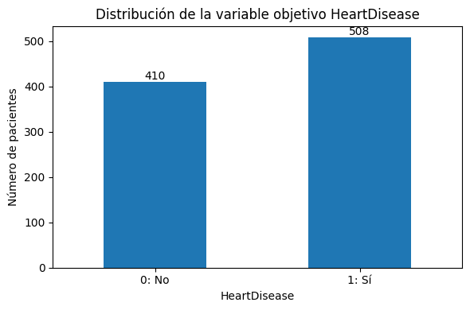
Lectura#
La clase positiva (HeartDisease = 1) es ligeramente mayoritaria. El dataset no está perfectamente balanceado, pero tampoco presenta un desbalance extremo. Para el modelado es conveniente reportar métricas como AUC, accuracy, matriz de confusión, precisión y recall.
9. Distribuciones de variables numéricas#
for col in numeric_cols:
ax = df[col].plot(kind="hist", bins=30, figsize=(7, 4), edgecolor="black")
ax.set_title(f"Distribución de {col}")
ax.set_xlabel(col)
ax.set_ylabel("Frecuencia")
plt.tight_layout()
plt.show()
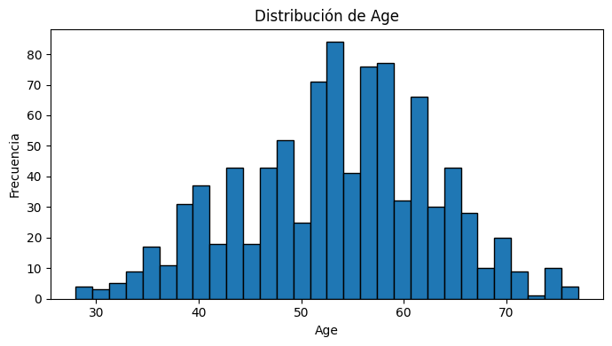
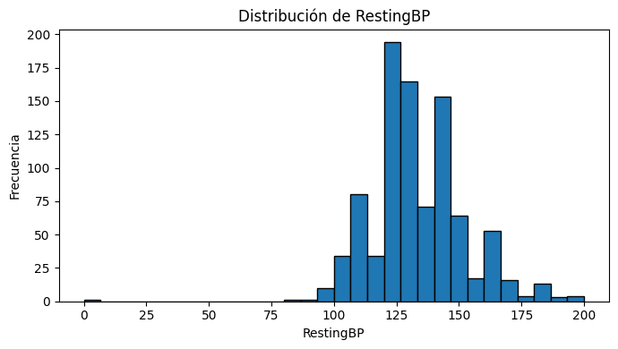
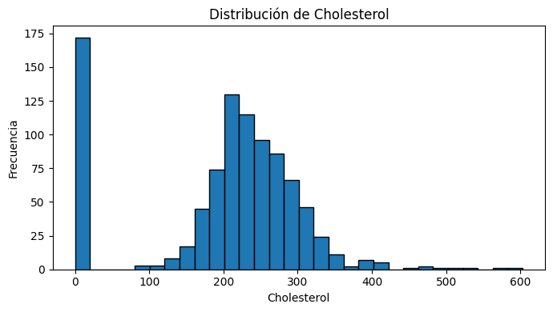
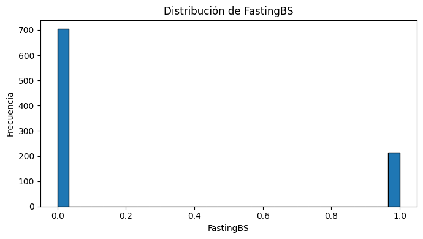
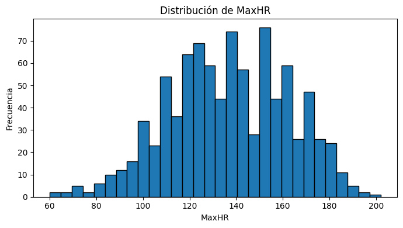
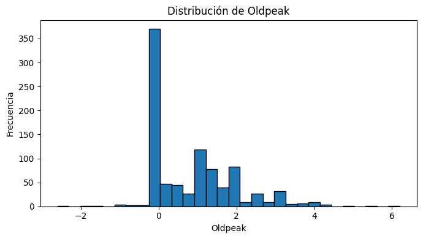
10. Boxplots por variable objetivo#
Estos gráficos ayudan a comparar la distribución de cada variable numérica entre pacientes con y sin enfermedad cardíaca.
for col in numeric_cols:
fig, ax = plt.subplots(figsize=(7, 4))
df.boxplot(column=col, by=target_col, ax=ax)
ax.set_title(f"{col} según HeartDisease")
ax.set_xlabel("HeartDisease")
ax.set_ylabel(col)
fig.suptitle("")
plt.tight_layout()
plt.show()
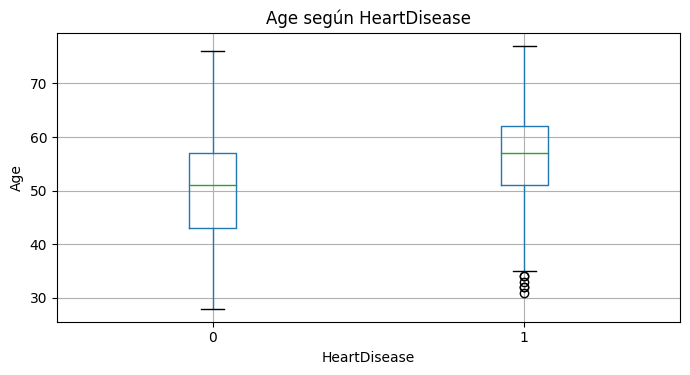
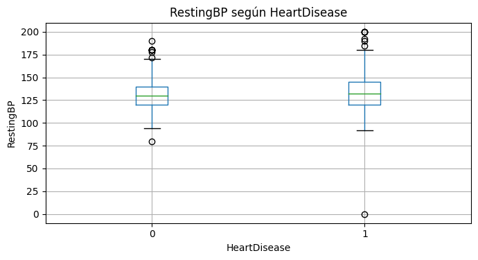
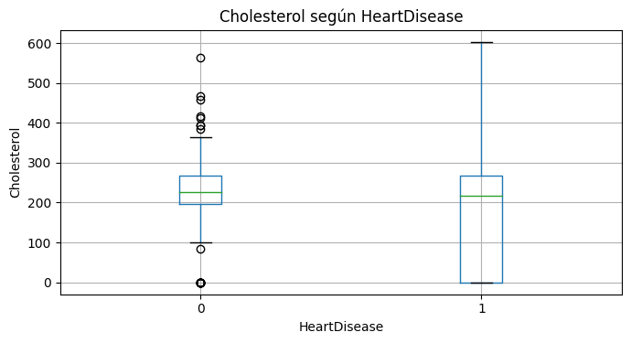
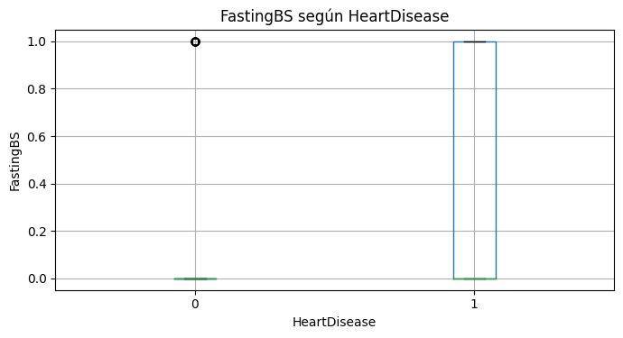
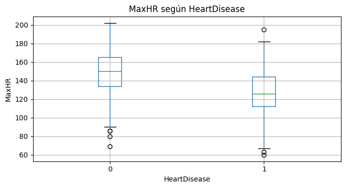
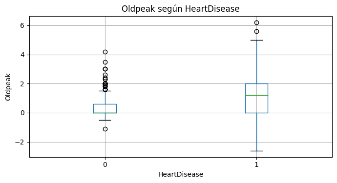
11. Variables categóricas#
Se revisan frecuencias y proporciones de enfermedad cardíaca para cada categoría.
for col in categorical_cols + binary_cols:
print(f"\nVariable: {col}")
display(df[col].value_counts().to_frame("conteo"))
ct = pd.crosstab(df[col], df[target_col], normalize="index") * 100
ct = ct.rename(columns={0: "HeartDisease=0 (%)", 1: "HeartDisease=1 (%)"}).round(2)
display(ct)
Variable: Sex
| conteo | |
|---|---|
| M | 725 |
| F | 193 |
| HeartDisease | HeartDisease=0 (%) | HeartDisease=1 (%) |
|---|---|---|
| Sex | ||
| F | 74.090 | 25.910 |
| M | 36.830 | 63.170 |
Variable: ChestPainType
| conteo | |
|---|---|
| ASY | 496 |
| NAP | 203 |
| ATA | 173 |
| TA | 46 |
| HeartDisease | HeartDisease=0 (%) | HeartDisease=1 (%) |
|---|---|---|
| ChestPainType | ||
| ASY | 20.970 | 79.030 |
| ATA | 86.130 | 13.870 |
| NAP | 64.530 | 35.470 |
| TA | 56.520 | 43.480 |
Variable: RestingECG
| conteo | |
|---|---|
| Normal | 552 |
| LVH | 188 |
| ST | 178 |
| HeartDisease | HeartDisease=0 (%) | HeartDisease=1 (%) |
|---|---|---|
| RestingECG | ||
| LVH | 43.620 | 56.380 |
| Normal | 48.370 | 51.630 |
| ST | 34.270 | 65.730 |
Variable: ExerciseAngina
| conteo | |
|---|---|
| N | 547 |
| Y | 371 |
| HeartDisease | HeartDisease=0 (%) | HeartDisease=1 (%) |
|---|---|---|
| ExerciseAngina | ||
| N | 64.900 | 35.100 |
| Y | 14.820 | 85.180 |
Variable: ST_Slope
| conteo | |
|---|---|
| Flat | 460 |
| Up | 395 |
| Down | 63 |
| HeartDisease | HeartDisease=0 (%) | HeartDisease=1 (%) |
|---|---|---|
| ST_Slope | ||
| Down | 22.220 | 77.780 |
| Flat | 17.170 | 82.830 |
| Up | 80.250 | 19.750 |
Variable: FastingBS
| conteo | |
|---|---|
| 0 | 704 |
| 1 | 214 |
| HeartDisease | HeartDisease=0 (%) | HeartDisease=1 (%) |
|---|---|---|
| FastingBS | ||
| 0 | 51.990 | 48.010 |
| 1 | 20.560 | 79.440 |
for col in categorical_cols + binary_cols:
counts = pd.crosstab(df[col], df[target_col])
ax = counts.plot(kind="bar", figsize=(7, 4))
ax.set_title(f"{col} vs HeartDisease")
ax.set_xlabel(col)
ax.set_ylabel("Número de pacientes")
ax.legend(title="HeartDisease", labels=["0: No", "1: Sí"])
plt.xticks(rotation=0)
plt.tight_layout()
plt.show()
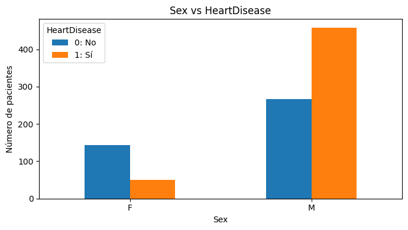
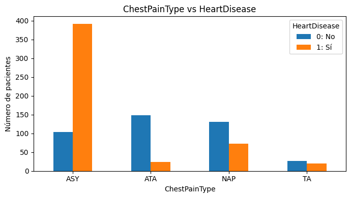
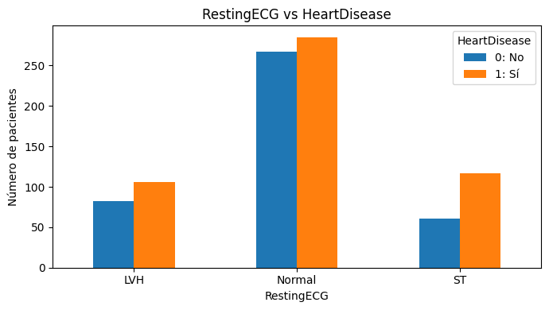
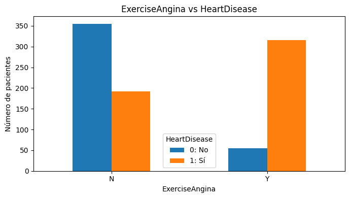
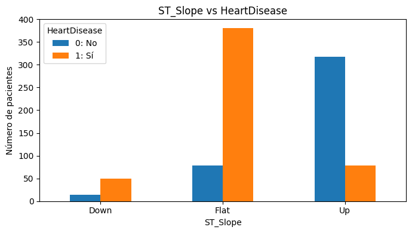
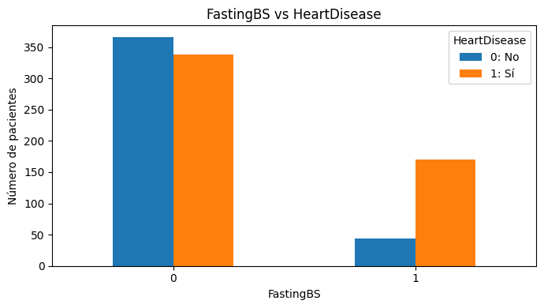
12. Tasa de enfermedad cardíaca por categoría#
Esta vista resume la proporción de pacientes con HeartDisease = 1 dentro de cada grupo.
for col in categorical_cols + binary_cols:
rate = (
df.groupby(col)[target_col]
.mean()
.sort_values(ascending=False)
.rename("tasa_heart_disease")
.to_frame()
)
rate["tasa_heart_disease_pct"] = (rate["tasa_heart_disease"] * 100).round(2)
display(rate)
ax = rate["tasa_heart_disease"].plot(kind="bar", figsize=(7, 4))
ax.set_title(f"Tasa de HeartDisease=1 por {col}")
ax.set_xlabel(col)
ax.set_ylabel("Proporción con enfermedad cardíaca")
ax.set_ylim(0, 1)
plt.xticks(rotation=0)
plt.tight_layout()
plt.show()
| tasa_heart_disease | tasa_heart_disease_pct | |
|---|---|---|
| Sex | ||
| M | 0.632 | 63.170 |
| F | 0.259 | 25.910 |
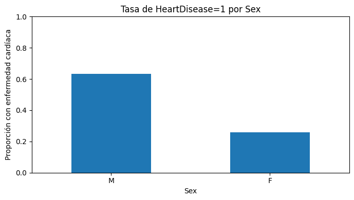
| tasa_heart_disease | tasa_heart_disease_pct | |
|---|---|---|
| ChestPainType | ||
| ASY | 0.790 | 79.030 |
| TA | 0.435 | 43.480 |
| NAP | 0.355 | 35.470 |
| ATA | 0.139 | 13.870 |
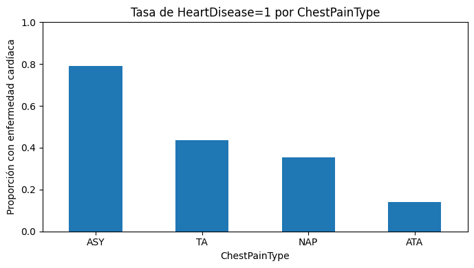
| tasa_heart_disease | tasa_heart_disease_pct | |
|---|---|---|
| RestingECG | ||
| ST | 0.657 | 65.730 |
| LVH | 0.564 | 56.380 |
| Normal | 0.516 | 51.630 |
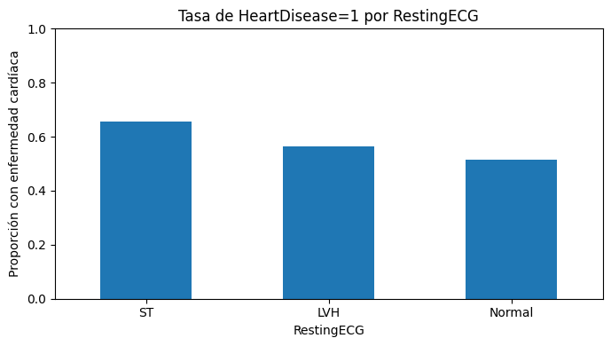
| tasa_heart_disease | tasa_heart_disease_pct | |
|---|---|---|
| ExerciseAngina | ||
| Y | 0.852 | 85.180 |
| N | 0.351 | 35.100 |
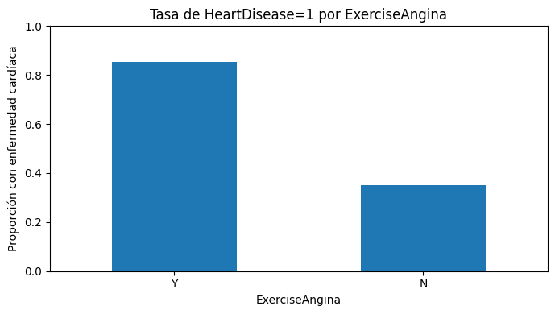
| tasa_heart_disease | tasa_heart_disease_pct | |
|---|---|---|
| ST_Slope | ||
| Flat | 0.828 | 82.830 |
| Down | 0.778 | 77.780 |
| Up | 0.197 | 19.750 |
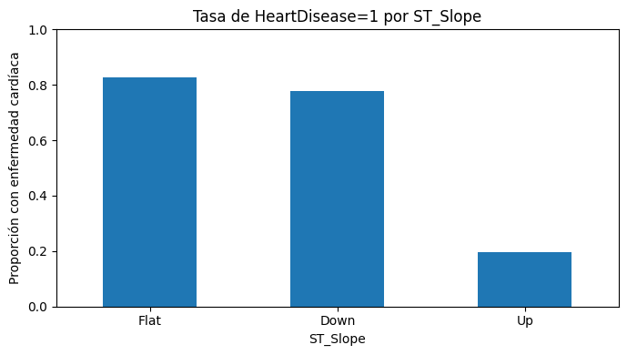
| tasa_heart_disease | tasa_heart_disease_pct | |
|---|---|---|
| FastingBS | ||
| 1 | 0.794 | 79.440 |
| 0 | 0.480 | 48.010 |
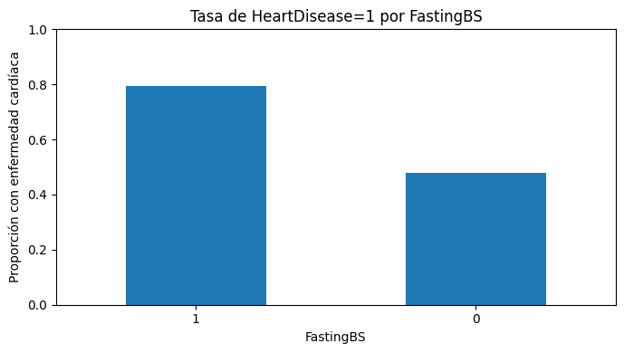
13. Correlación entre variables numéricas#
En esta sección se calcula la correlación solo con variables numéricas originales.
corr = df[numeric_cols + [target_col]].corr(numeric_only=True)
display(corr.round(3))
fig, ax = plt.subplots(figsize=(8, 6))
im = ax.imshow(corr, aspect="auto")
ax.set_xticks(range(len(corr.columns)))
ax.set_xticklabels(corr.columns, rotation=45, ha="right")
ax.set_yticks(range(len(corr.index)))
ax.set_yticklabels(corr.index)
ax.set_title("Matriz de correlación numérica")
fig.colorbar(im, ax=ax)
for i in range(len(corr.index)):
for j in range(len(corr.columns)):
ax.text(j, i, f"{corr.iloc[i, j]:.2f}", ha="center", va="center", fontsize=8)
plt.tight_layout()
plt.show()
| Age | RestingBP | Cholesterol | FastingBS | MaxHR | Oldpeak | HeartDisease | |
|---|---|---|---|---|---|---|---|
| Age | 1.000 | 0.254 | -0.095 | 0.198 | -0.382 | 0.259 | 0.282 |
| RestingBP | 0.254 | 1.000 | 0.101 | 0.070 | -0.112 | 0.165 | 0.108 |
| Cholesterol | -0.095 | 0.101 | 1.000 | -0.261 | 0.236 | 0.050 | -0.233 |
| FastingBS | 0.198 | 0.070 | -0.261 | 1.000 | -0.131 | 0.053 | 0.267 |
| MaxHR | -0.382 | -0.112 | 0.236 | -0.131 | 1.000 | -0.161 | -0.400 |
| Oldpeak | 0.259 | 0.165 | 0.050 | 0.053 | -0.161 | 1.000 | 0.404 |
| HeartDisease | 0.282 | 0.108 | -0.233 | 0.267 | -0.400 | 0.404 | 1.000 |
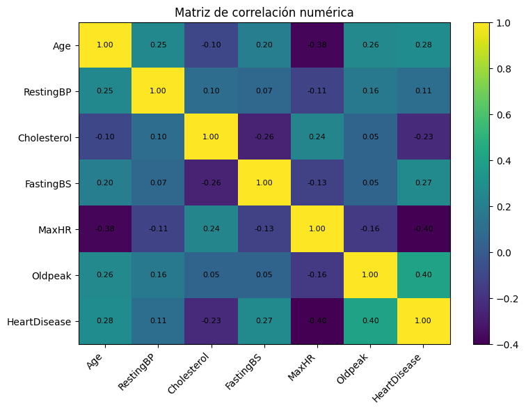
14. Relación entre edad, frecuencia cardíaca máxima y enfermedad cardíaca#
fig, ax = plt.subplots(figsize=(7, 5))
for target_value, group in df.groupby(target_col):
ax.scatter(
group["Age"],
group["MaxHR"],
alpha=0.65,
label=f"HeartDisease={target_value}"
)
ax.set_title("Age vs MaxHR según HeartDisease")
ax.set_xlabel("Age")
ax.set_ylabel("MaxHR")
ax.legend()
plt.tight_layout()
plt.show()
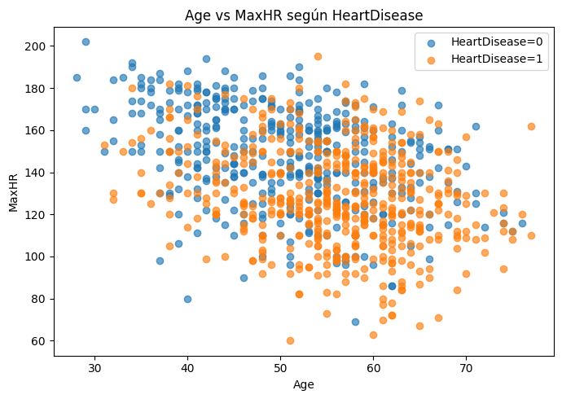
15. Revisión de outliers con regla IQR#
La detección de outliers no implica eliminarlos automáticamente. En datos clínicos, algunos valores extremos pueden ser reales. La decisión debe justificarse y, si se transforma/imputa, hacerse dentro del flujo de entrenamiento.
outlier_rows = []
for col in numeric_cols:
q1 = df[col].quantile(0.25)
q3 = df[col].quantile(0.75)
iqr = q3 - q1
lower = q1 - 1.5 * iqr
upper = q3 + 1.5 * iqr
n_outliers = ((df[col] < lower) | (df[col] > upper)).sum()
outlier_rows.append({
"variable": col,
"q1": q1,
"q3": q3,
"iqr": iqr,
"limite_inferior": lower,
"limite_superior": upper,
"n_outliers": n_outliers,
"pct_outliers": round(n_outliers / len(df) * 100, 2)
})
outlier_summary = pd.DataFrame(outlier_rows).sort_values("pct_outliers", ascending=False)
display(outlier_summary)
| variable | q1 | q3 | iqr | limite_inferior | limite_superior | n_outliers | pct_outliers | |
|---|---|---|---|---|---|---|---|---|
| 3 | FastingBS | 0.000 | 0.000 | 0.000 | 0.000 | 0.000 | 214 | 23.310 |
| 2 | Cholesterol | 173.250 | 267.000 | 93.750 | 32.625 | 407.625 | 183 | 19.930 |
| 1 | RestingBP | 120.000 | 140.000 | 20.000 | 90.000 | 170.000 | 28 | 3.050 |
| 5 | Oldpeak | 0.000 | 1.500 | 1.500 | -2.250 | 3.750 | 16 | 1.740 |
| 4 | MaxHR | 120.000 | 156.000 | 36.000 | 66.000 | 210.000 | 2 | 0.220 |
| 0 | Age | 47.000 | 60.000 | 13.000 | 27.500 | 79.500 | 0 | 0.000 |
16. Perfil promedio por clase#
Se comparan promedios de variables numéricas entre pacientes con y sin enfermedad cardíaca.
profile = df.groupby(target_col)[numeric_cols].mean().T
profile.columns = ["HeartDisease=0", "HeartDisease=1"]
profile["diferencia_1_menos_0"] = profile["HeartDisease=1"] - profile["HeartDisease=0"]
display(profile.round(2))
ax = profile[["HeartDisease=0", "HeartDisease=1"]].plot(kind="bar", figsize=(10, 5))
ax.set_title("Promedios de variables numéricas por clase")
ax.set_xlabel("Variable")
ax.set_ylabel("Promedio")
plt.xticks(rotation=45, ha="right")
plt.tight_layout()
plt.show()
| HeartDisease=0 | HeartDisease=1 | diferencia_1_menos_0 | |
|---|---|---|---|
| Age | 50.550 | 55.900 | 5.350 |
| RestingBP | 130.180 | 134.190 | 4.000 |
| Cholesterol | 227.120 | 175.940 | -51.180 |
| FastingBS | 0.110 | 0.330 | 0.230 |
| MaxHR | 148.150 | 127.660 | -20.500 |
| Oldpeak | 0.410 | 1.270 | 0.870 |
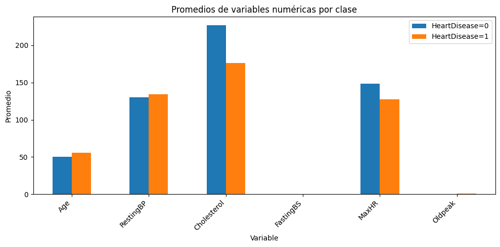
17. Hallazgos principales del EDA#
El dataset tiene 918 observaciones y 12 columnas, incluyendo la variable objetivo
HeartDisease.No hay valores nulos explícitos ni filas duplicadas.
La variable objetivo está moderadamente balanceada: hay una proporción ligeramente mayor de pacientes con enfermedad cardíaca.
Cholesterolcontiene una cantidad importante de valores0, lo que probablemente representa datos no registrados y no mediciones reales. También aparece un caso deRestingBP = 0.Las variables categóricas con mayor separación visual respecto a la enfermedad cardíaca son:
ST_SlopeExerciseAnginaChestPainTypeSexFastingBS
En promedio, los pacientes con
HeartDisease = 1tienden a tener:mayor edad,
menor
MaxHR,mayor
Oldpeak,mayor presencia de angina inducida por ejercicio,
mayor frecuencia de pendiente ST plana o descendente.
La correlación lineal de variables numéricas no captura toda la información predictiva, porque varias variables importantes son categóricas.
18. Recomendaciones para el modelado#
Dividir los datos en entrenamiento y prueba antes de cualquier ajuste de escaladores, imputadores o codificadores.
Usar
ColumnTransformerpara separar variables numéricas y categóricas.Tratar
Cholesterol = 0yRestingBP = 0como valores faltantes dentro del pipeline, no directamente sobre todo el dataset antes de la validación.Usar
OneHotEncoder(handle_unknown="ignore")para variables categóricas.Comparar modelos mediante
Pipeline+GridSearchCV, reportando AUC, accuracy, matriz de confusión y curva ROC.